Portfolio
Misc. Projects
Image Classification System
This is the Image Classification program I made for my senior year as a Computer Science major at the University of North Georgia.


Radiology Information System
We got the opportunity to work on a fairly large project as part of our Advanced Software Engineering class in an agile environment. This project was to create a PACS (Picture Archiving and Communication System).
This project entailed following SCRUM procedures, setting up document requirements, scenarios, use cases, sequence diagrams, ER diagrams, access and control policies, programming, testing, documentation, creating user manuals, debugging, and negotiating with our "client".This project was a collaborative effort between 7 individuals who all contributed to the success of our Radiology system. This page is just for a representation of this project that I took great pride in working on.These documents, code, and more can be found on this GitHub repo.

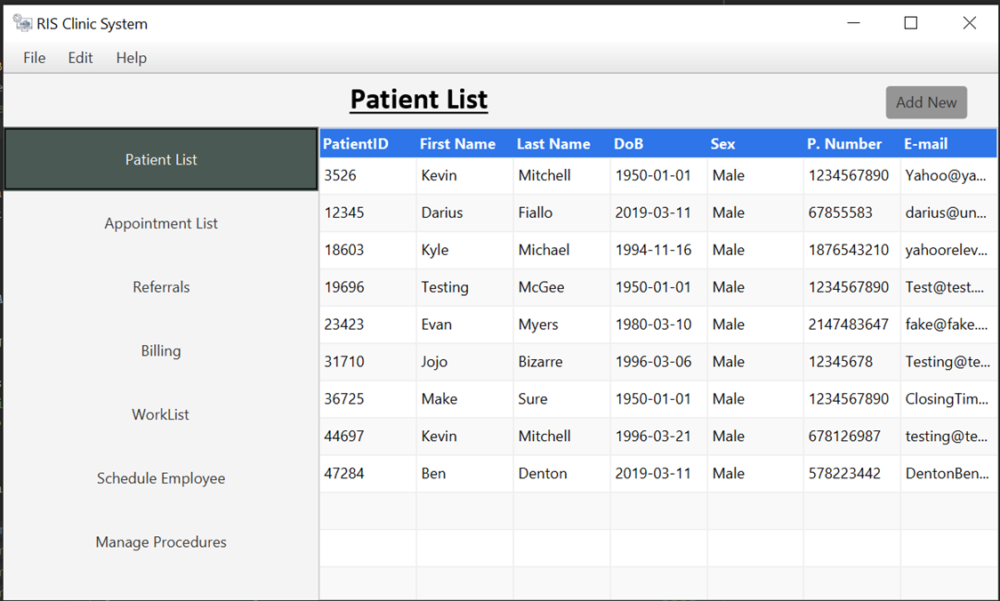
The Final Patient editor View

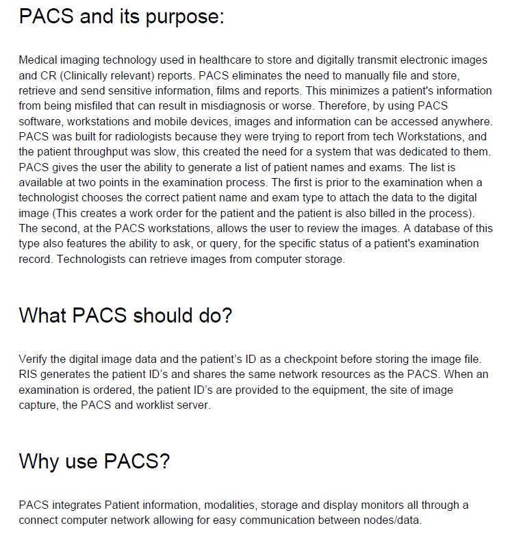
A small snippet of the research document for what a PACS defines.

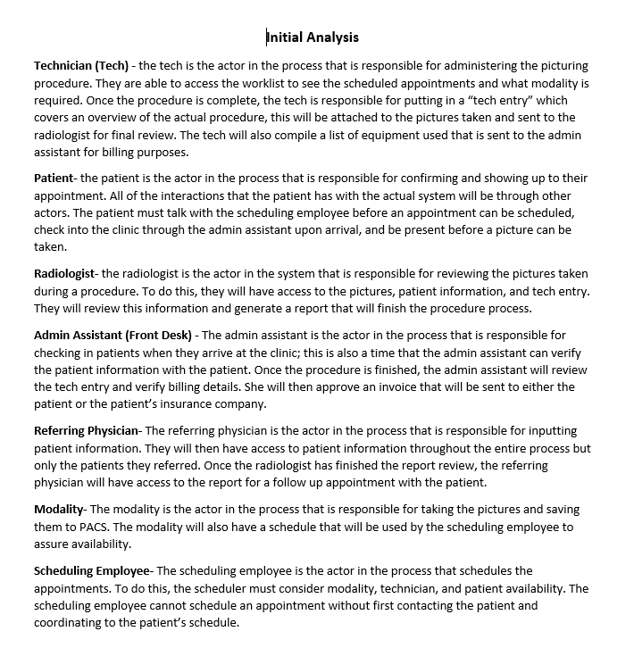
A small snippet of the initial analysis document

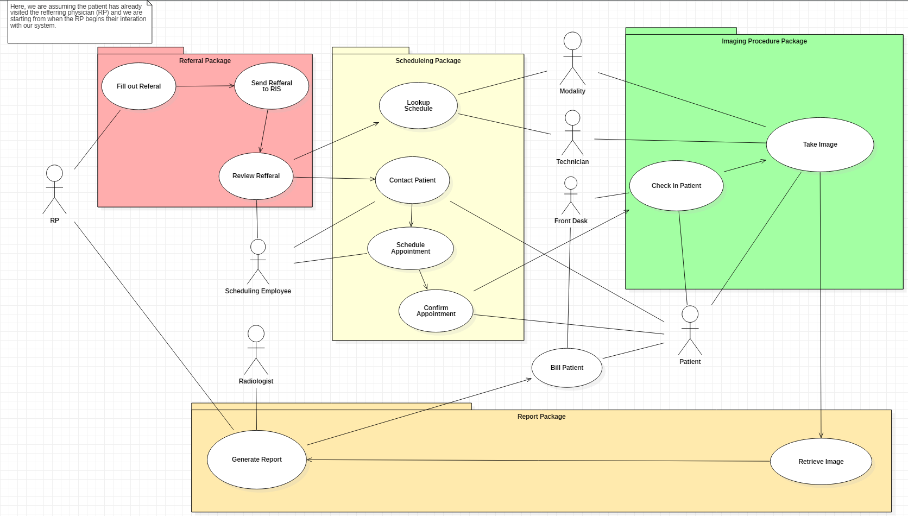
Use case diagram

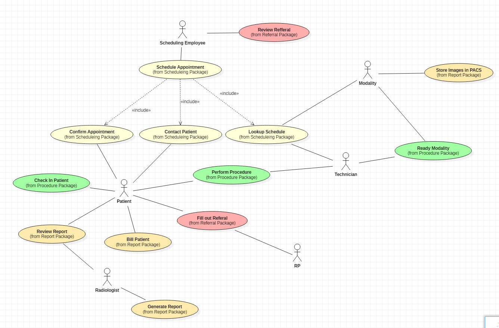
relation diagram

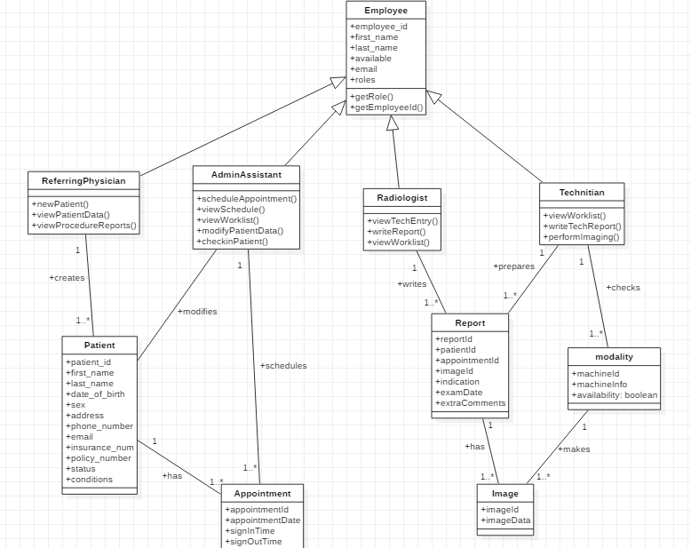
Class diagram for our database

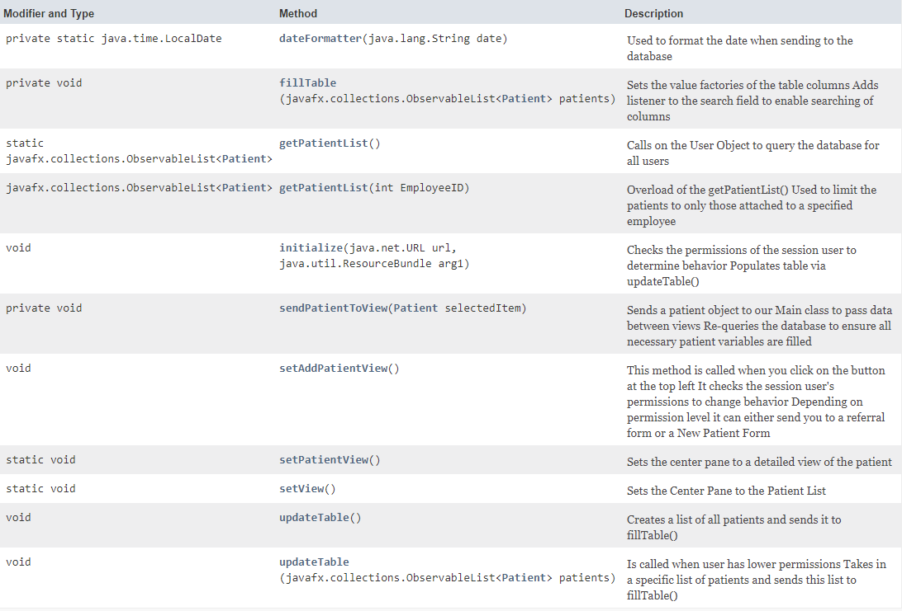
The java documentation for the Patient List Controller for the application

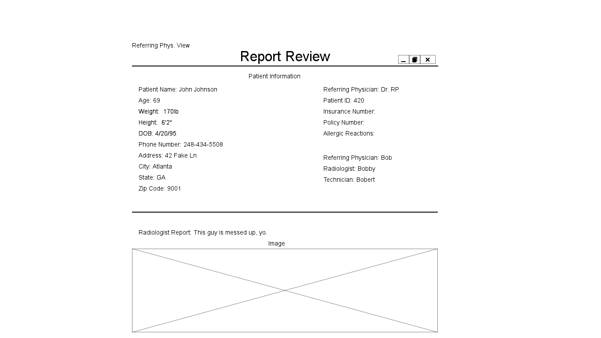
This process included designing a page for many of the pages inside the application

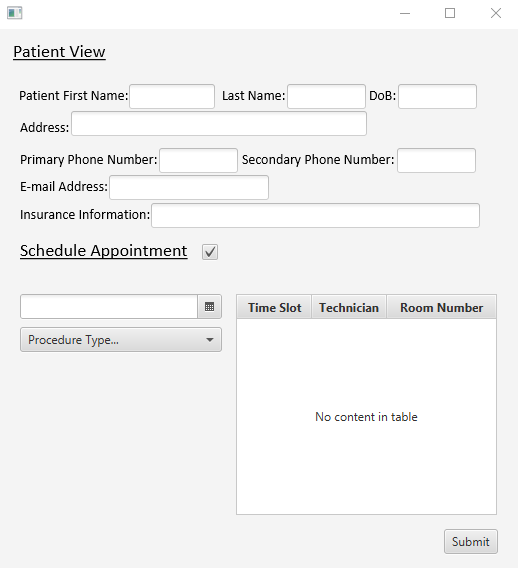
As well as designing more advanced mockups in our proposed language (JavaFX).

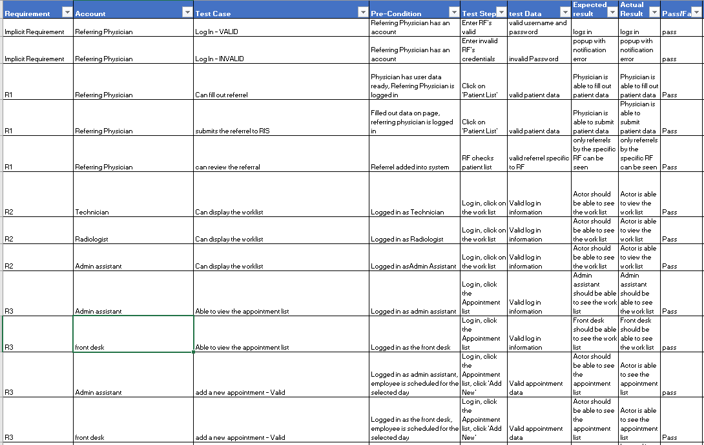
Passing test cases in our testing document

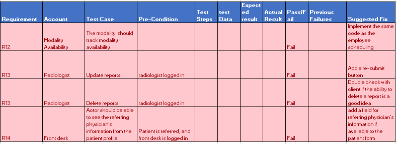
Failing test cases in our testing document

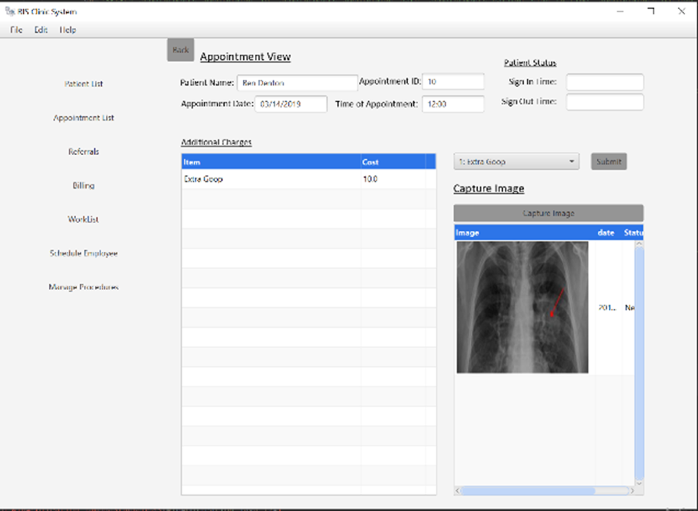
The Final Appointment editor View
Discord Gacha Bot
This bot was created by parsing a couple different websites to gather data on a character's show, description, image URLs...etc. from both a Disney and Anime website. This resulted in a database of over 50,000 characters. The bot itself was made in Java using multithreading, Discord JDA, MySQL, and currently runs 24/7 on a Raspberry Pi.

Selenium Purchasing Bot
This bot checks an items list and spins up a selenium thread for every best buy link entered. The website updates automatically, and when the text changes to "Add to Cart", the bot presses the item, plays a sound effect, and navigates to the checkout menu to lock in the item.
Built in Java using multithreading.